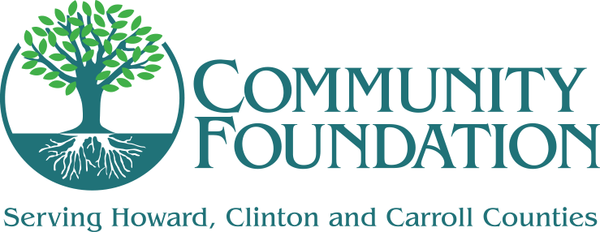
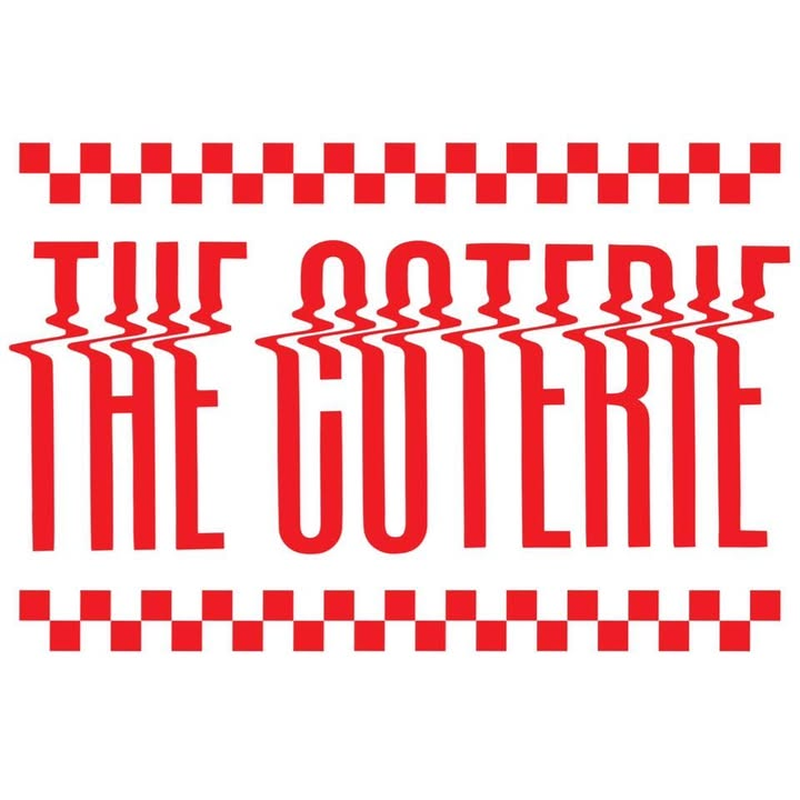
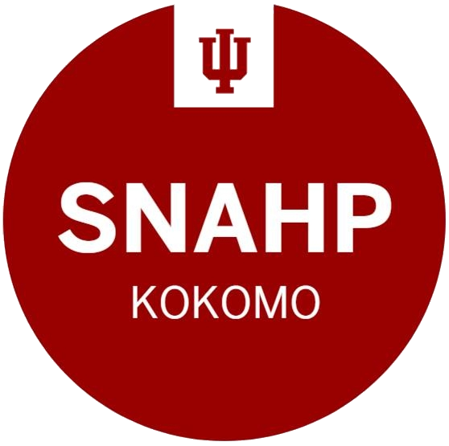

🍂 Thank You to Our First Friday Sponsors!
These businesses made the Scarecrow Scavenger Hunt possible.
🍂 How the hunt works
First Friday, October 2 — downtown Kokomo
- Grab a passport — free hunt card at Artworks Gallery (210 N Main St) or Fired Arts Studio (111 W Sycamore St).
- Find all 21 scarecrows — scan each pumpkin’s QR code with your phone to collect its letter.
- Crack the phrase — unscramble the secret phrase, turn in your card at either spot, and you’re entered in the Mystery Prize Basket drawing.
Please use crosswalks, and bring a phone and/or flashlight after dark. 🔦
🗺️ View the Scarecrow Trail Map

Artworks Gallery The Kokomo Art Association's downtown gallery at 210 N Main St — pick up your free passport at the door, and turn in your finished card upstairs to enter the Mystery Prize Basket drawing. Visit official site ↗
Lucky Raven Tattoo Lounge Began as Devon Wooldridge's one-person private studio at Fade Salon, then expanded into a larger collaborative shop with multiple artists. (Facebook is the shop's official online presence.) Visit official site ↗
Dechert Law Office
A general-practice law firm at 217 N. Main St. in downtown Kokomo, concentrating in criminal law, family law, and personal injury.
Visit official site ↗
The Hardie Group
A family-run Kokomo realty owned by Kevin and Nancy Hardie — 'family, tradition and pride are what The Hardie Group is all about.'
Visit official site ↗

Kokomo Area Lions Kokomo's club is part of Lions Clubs International, the world's largest service club organization, with local records dating to December 1969. Visit official site ↗
Oscar's Pizza
Serves pizza plus calzones, stromboli, breadsticks, and salads — with listings calling out its Detroit-style and creative specialty pies.
Visit official site ↗
Community Foundation of Howard County
Formed as a nonprofit public charity in March 1991, the Foundation funds local grants and scholarships — its grantmaking has even commissioned new music for the Howard County Music Festival.
Visit official site ↗
Community First Bank of Indiana
Established February 3, 2003 and headquartered in Kokomo — its CommuniTee Giveback Program matches up to $500 in donations to local causes.
Visit official site ↗
Fired Arts Studio
A family arts center offering pottery painting, canvas painting, and mosaics — no experience required.
Visit official site ↗
Pix Pots Pottery
A Kokomo studio handcrafting ceramics — unique mugs, bowls, and custom decal mugs.
Visit official site ↗
YMCA of Kokomo
Serving Kokomo since 1875 — it runs a downtown facility plus a 52-acre day camp.
Visit official site ↗
Indiana Underdog Martial Arts
Led by Terry Gruel — a 3-time USKA world champion (2002–04) whose school has trained 17 world champions — with programs from Brazilian Jiu-Jitsu to karate starting at age 3.
Visit official site ↗
Tip Top Car Washes
Every wash comes with free vacuums — and the company invites sponsorship requests from local schools, nonprofits, and community causes.
Visit official site ↗
Crossroads Community Church
A non-denominational Kokomo church with two campuses — Downtown at 116 N. Main St. and South — and a mission of helping people take 'their next step with Christ.'
Visit official site ↗